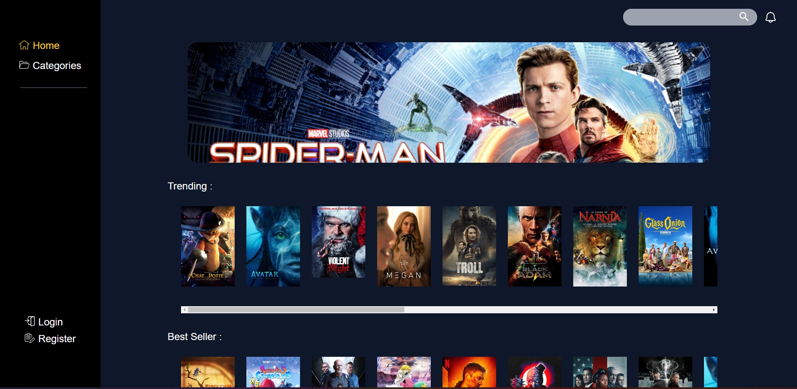
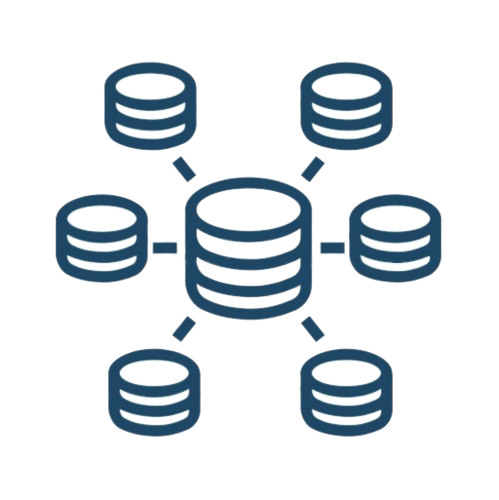

This website is a movie wiki that is based on The Movie Database API. It was my first time working with an API, and for the first time, I was not alone in this project; I worked with my friend and colleague, Hugo.

Context :
This project was my first experience working with an API. We used the JavaScript fetch method to retrieve all the data from TMDB API, and PHP-OOP was utilized to develop the login system, album system, and like system. The main objective of this website is to allow users to create albums and save movies in them, and with the help of the API, there is access to a vast collection of movies. Additionally, users can share albums with their friends and like the ones they enjoy.
A social website

A backend project
As mentioned earlier, the primary focus of this project was not on the website's aesthetics, but rather on its functionality. We utilized Tailwind CSS to make it look good, and we are constantly updating it. Therefore, it may have changed since the last time you visited.